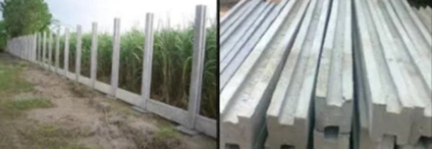

RCC Pillars & RCC Poles Gallery



Manufacturers & Infrastructure Development Contractors
R K Paver Blocks & Cement Products manufactures high-quality RCC pillars and RCC poles for fencing, boundary walls, agricultural applications and infrastructure works.
Our RCC poles are manufactured using quality raw materials, proper vibration process and proper curing for strength and long-lasting durability.
We manufacture precast RCC fencing pillars, cement fencing poles and RCC poles for agricultural fencing, factory boundaries, farmhouse fencing and industrial applications.
Our RCC poles are supplied across Panipat, Karnal, Samalkha, Sonipat, Kurukshetra, Shamli and nearby areas.
